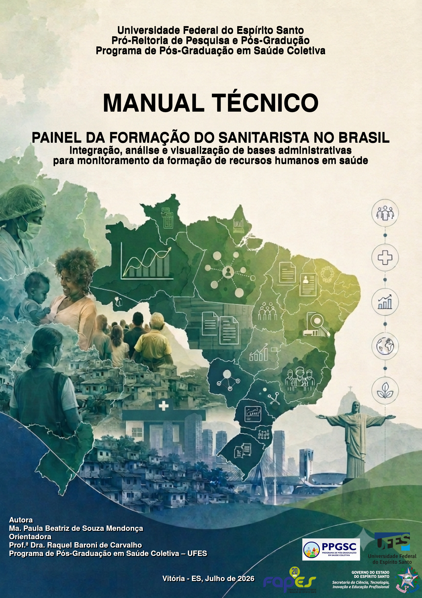

Início
Apresentação
O Observatório da Formação do Sanitarista no Brasil nasce como um espaço para reunir e disponibilizar informações sobre os diferentes caminhos formativos disponíveis no sistema de educação superior brasileiro para a formação da força de trabalho do sanitarista.
O Observatório é um produto da pesquisa de doutorado desenvolvida no Programa de Pós-Graduação em Saúde Coletiva da Universidade Federal do Espírito Santo (UFES).
Como parte desse espaço, o Painel da Formação do Sanitarista no Brasil reúne informações qualificadas, provenientes de diferentes bases de dados governamentais oficiais, sobre quatro segmentos formativos: graduação; pós-graduação lato sensu; residências médicas, uniprofissionais e multiprofissionais; e pós-graduação stricto sensu.
O Observatório também disponibiliza o manual técnico do Painel, uma biblioteca de materiais sobre a história, a formação e a avaliação dos cursos e programas, além de legislações relacionadas à regulamentação da profissão.
Esperamos que este espaço constitua uma ferramenta de apoio para estudantes, pesquisadores, gestores, instituições formadoras e demais interessados na compreensão da formação do sanitarista e em sua contribuição para o fortalecimento do SUS.
Objetivo
O Observatório da Formação do Sanitarista no Brasil tem como objetivo reunir, organizar e disponibilizar informações qualificadas sobre a formação do sanitarista, contribuindo para a compreensão dos diferentes caminhos formativos, das desigualdades territoriais e dos processos de regulamentação e profissionalização da categoria.
Quem pode ser sanitarista?
De acordo com a Lei nº 14.725/2023, podem habilitar-se ao exercício da profissão de sanitarista aqueles que atendam aos requisitos previstos na legislação, incluindo:
- diplomados em curso de graduação reconhecido pelo Ministério da Educação e classificado na área de Saúde Coletiva ou Saúde Pública;
- diplomados em curso de mestrado ou doutorado na área de Saúde Coletiva ou Saúde Pública, conforme os requisitos legais;
- diplomados em curso de graduação na área de Saúde Coletiva ou Saúde Pública realizado no exterior, com diploma revalidado no Brasil;
- portadores de certificado de conclusão de Residência Médica ou Residência Multiprofissional em Saúde na área de Saúde Coletiva ou Saúde Pública;
- portadores de certificado de especialização lato sensu na área de Saúde Coletiva ou Saúde Pública, observados os requisitos legais;
- profissionais com formação de nível superior que comprovem, nos termos da lei, o exercício de atividade profissional correlata por pelo menos cinco anos até a data de publicação da Lei.
Consulte a legislação vigente para conhecer os requisitos completos.
O exercício da profissão requer registro profissional no órgão competente do SUS. O Decreto nº 12.921/2026 regulamenta os procedimentos e documentos necessários para o registro profissional. O registro profissional de sanitarista é gratuito e deve ser solicitado de forma totalmente digital pelo SIRP-MS (Sistema de Registro Profissional) do Ministério da Saúde pelo site https://degerts.unasus.gov.br/sirp-ms
O Observatório em números
Os indicadores apresentados neste painel permitem explorar diferentes dimensões da formação do sanitarista no Brasil.
Entre cursos e programas
1.335
Instituições
Mais de 404
Estados
26 + DF
Vagas entre os segmentos formativos
150.000
Explorar os dados
O painel interativo reúne as principais informações e indicadores da formação do sanitarista no Brasil. Os dados são apresentados de distintas maneiras para cada segmento formativo.
Painel da Formação do Sanitarista no Brasil
Explore os dados
O painel interativo reúne as principais visualizações e indicadores da formação do sanitarista no Brasil.
Manual Técnico
O manual do painel apresenta informações sobre sua utilização e instruções da arquitetura de construção do painel.

Fontes de dados
Biblioteca
Acesse materiais sobre história, formação, avaliação e regulamentação da profissão de sanitarista.
Atualização
Última atualização: 09/09/2026
Contato
Para dúvidas, sugestões e informações sobre o Observatório e o Painel da Formação do Sanitarista no Brasil envie para o e-mail: paineldaformacaodosanitarista@gmail.com
Quem Somos
Ma. Paula Beatriz de Souza Mendonça
Doutoranda em Saúde Coletiva pela Universidade Federal do Espírito Santo (UFES), pesquisadora na área de formação e profissionalização do sanitarista. É responsável pela criação e desenvolvimento do Observatório da Formação do Sanitarista no Brasil, produto de sua pesquisa de doutorado.
Profa. Dra. Raquel Baroni de Carvalho
Professora Titular do Dept. de Saúde Coletiva da Universidade Federal (UFES) e dos Programas de Pós-Graduação em Ciências Odontológicas e Saúde Coletiva, orientadora da pesquisa de doutorado que deu origem ao Observatório.